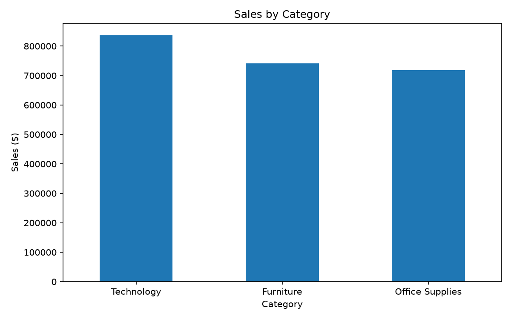
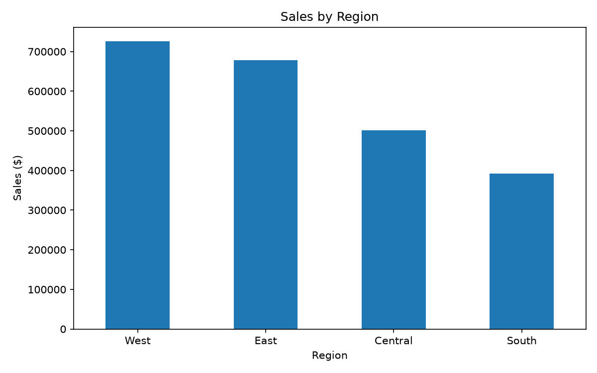
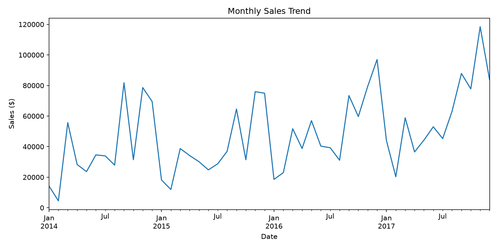

Key Performance Metrics
Overall performance from the analyzed sales data.
Sales Analysis
Visual summaries produced by the Visualization Agent.
Sales by Category
Technology leads total category sales.

Sales by Region
The West region has the highest sales.

Monthly Sales Trend
Monthly sales performance from 2014 through 2017.

Business Insights
Statistical findings and AI-generated business recommendations.
Technology Leads
Technology generated the highest category sales with approximately $836K.
West Region Leads
The West region recorded the highest sales with approximately $725K.
Top-Selling Product
The Canon imageCLASS 2200 Advanced Copier was the best-selling product by sales.
AI-Powered Business Insights
The Analysis Agent used statistical results from the cleaned Superstore dataset and passed them to a Groq large language model to generate business-oriented observations and recommendations.
Overall Performance
The dataset generated approximately $2.30M in sales and $286K in profit, indicating strong overall business performance.
Top Product
The Canon imageCLASS 2200 Advanced Copier was the highest-selling product by total sales, making it an important product to monitor.
Regional Opportunity
The West region recorded the highest sales, suggesting that successful strategies in this region can provide useful patterns for other markets.
Category Performance
Technology generated the highest sales and was also the most profitable category in the analyzed dataset.
- Continue focusing on high-performing Technology products while monitoring their profitability.
- Study the successful sales patterns in the West region and consider applying relevant strategies to lower-performing regions.
- Monitor top-selling products such as the Canon imageCLASS 2200 Advanced Copier for inventory and sales opportunities.
- Use the monthly sales trend to identify periods of higher demand and support future sales planning.
Processing Pipeline
How the raw retail dataset was transformed into this dashboard and AI-powered analysis.